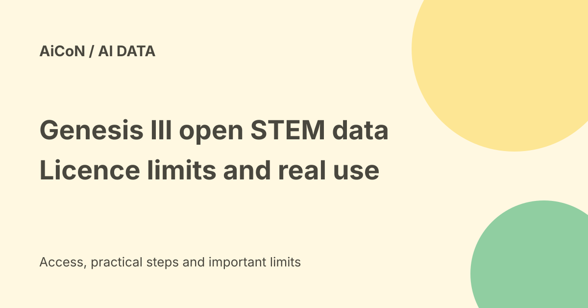

QVAC Genesis III: 191B open STEM tokens, licence limits and real verdicts
Tether AI Research's Genesis III is a 191.43-billion-token open synthetic STEM dataset built so models learn to explain answers, including working through their own wrong ones. The dataset is free only for non-commercial use under CC-BY-NC 4.0, while the companion 1.7B model is Apache-2.0.

What is Genesis III?
Genesis III is a synthetic training dataset for science, technology, engineering and mathematics, released on Hugging Face by Tether AI Research's QVAC project and peer-reviewed at COLM 2026.
It spans 19 STEM domains from high-school to professional level, across about 160 million documents. The 191.43 billion tokens split into two parts: 108.67 billion of option-level reasoning and 82.76 billion of failure-aware corrective lessons.
The student-first method
The dataset's trick is how each lesson is built. A small student model attempts each question first. Where it fails, the material becomes a corrective lesson targeting that failure; where it succeeds, the material becomes option-by-option reasoning about why each choice is right or wrong.
The goal is a model that can explain its answers rather than only guess them. Whether a model trained this way explains well in your application is something to test, not assume.
Licence: read this before any commercial idea
The dataset is released under CC-BY-NC 4.0. That allows free use, sharing and adaptation for non-commercial research and education with attribution, and it blocks commercial use of the dataset itself.
The companion model, qvac-genesis-iii-qwen3-1.7b-ol, is Apache-2.0, which permits commercial use of the model. Dataset and model licences are different; do not treat the model's permissive licence as covering the training data.
What the benchmarks say - and who ran them
In Tether's token-matched comparisons, models trained on Genesis III beat Cosmopedia-v2 by 15.03 points on MMLU STEM and about 21 points on ARC-Challenge. Training used 64 H100 GPUs.
These are vendor-run results published in the project's own paper, arXiv 2609.19513. The paper also reports finding 17 contaminated documents. Independent replication is not yet established, so treat the gains as promising vendor evidence, not settled fact.
Free-versus-paid verdict
For a student, teacher or researcher in India, the dataset and model are free to download and use with attribution, and no payment or subscription is involved.
For a startup or company, the dataset licence blocks commercial training use. The Apache-2.0 model is the safer component for commercial experiments; read both licence texts rather than relying on this summary.
Practical routes to use it
- Open the Hugging Face dataset page and read the card.
- Check the CC-BY-NC 4.0 terms against your intended use.
- Download a small subset first; the full corpus is very large.
- Inspect samples from the domains you care about.
- Try the Apache-2.0 companion model for a quick baseline.
- Run your own evaluation before trusting published gains.
Plan storage and bandwidth: hundreds of gigabytes is a realistic expectation for the full data. This guide did not download or train on the dataset.
India fit
Indian colleges and self-learners get a large, free, explanation-focused STEM corpus usable on modest research budgets, with the small companion model runnable on a single GPU.
Commercial edtech use of the dataset itself is restricted by the non-commercial licence. Attribution is required, so keep the QVAC citation in any published work.
What changed since the original post?
The original post described the release accurately. This guide adds the precise OL and corrective token split, the document count, the exact licence pairing, the 17 contaminated documents disclosed in the paper, and a clear vendor-run label on the benchmark gains.
Frequently asked questions
Can a company train on Genesis III?
The dataset licence is CC-BY-NC 4.0, which blocks commercial use. The companion model is Apache-2.0 and commercially usable.
Is the dataset really free?
Yes for non-commercial research and education, with attribution. Compute and storage are your own cost.
Were the benchmark wins independently verified?
Not in the checked materials. They come from the project's own paper.
Sources: Official Hugging Face release blog · Dataset page and licence · Apache-2.0 companion model · Peer-reviewed paper on arXiv. Checked 7 October 2026.